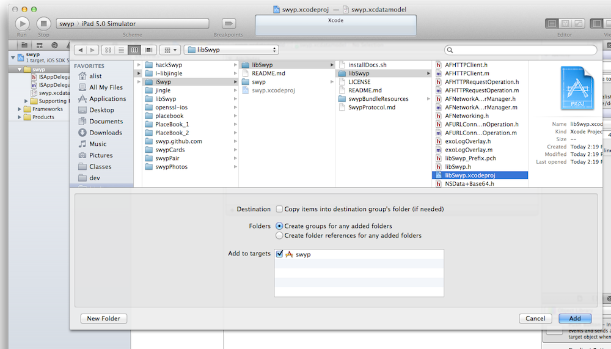

Dev Guide
Swÿp is an app framework currently compatible with iOS.
See
Swÿp’s Github Home
Quickstart
- Checkout Swyp Photos git@github.com:swyp/swypPhotos.git // swypPhotos
- pull submodules: git submodule update -r --init
- compile and try out code
- to get into new app: fork and checkout git@github.com:swyp/swyp.git
- Add to xcode project

- Link Binary With Library "libswyp.a" in Build Phases; Add swyp as target dependency in project settings->targetName->Build Phases
- Setup project linker flags to load all libSwyp class extensions
- Copy the frameworks swyp uses to your current app's project
- Add path to swyp/libswyp to project settings -> build settings -> header search paths
10. Import <libswyp/libswyp.h> wherever needed, or in Prefix to make available everywhere
11. Checkout Swyp Photos project for intro to implementation!